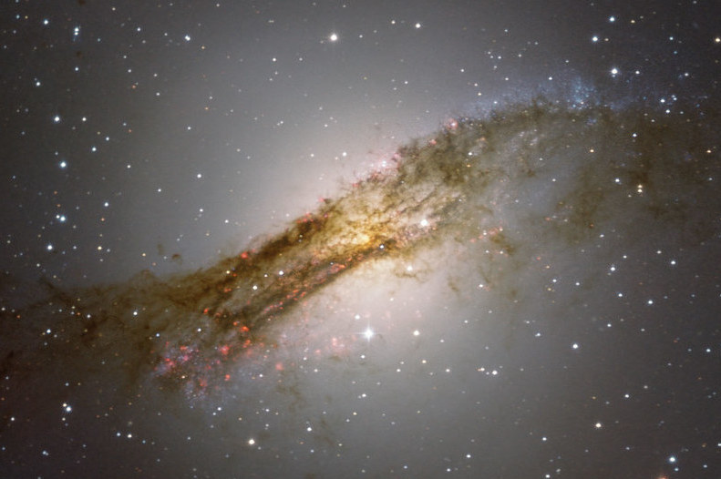

Research
Research Interests:
I study the outflowing winds of AGN using X-ray data collected by ESA's XMM-Newton telescope. Observations peer into the heart of galaxies, where their supermassive black holes lie.
For an explanation on what AGN and AGN winds are, see the AGN Winds webpage.
The key questions I want to explore are:
- What are the origins and launching mechanisms of these winds?
- Where are these winds located with respect to the central black hole?
- Are these winds energetic enough to influence galaxy star formation?
- Are the warm absorber and narrow line region regions the same, just seen along different lines of sight?
- How do radio emitting outflows effect the observed plasma processes?
To answer these questions, I undertake the following:
- Analyse the high-resolution X-ray spectra with the SPEX code to create models that give insight into the properties of the wind and intrinsic AGN continuum.
- Study the emission and absorption features in the XMM-Newton Reflection Grating Spectrometer (RGS) spectra.
- Estimate the plasma wind locations with respect to the central black hole, allowing me to infer about the eenergetics of the wind.
- Compare different AGN together to build an overall picture of these complex environments.
- Led an XMM-Newton observation proposal to explore an AGN that shows possible outflow-induced star formation.
